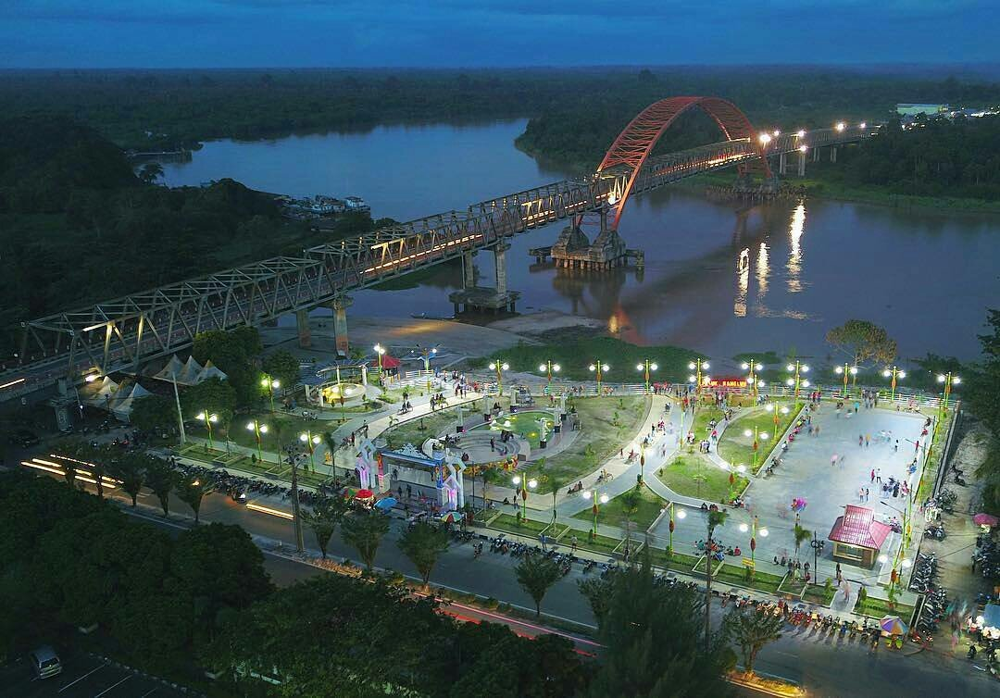

Taman Pasuk Kameluh
Salah satu objek wisata yang menjadi andalan di Kota Palangkaraya adalah
Taman Pasuk Kameluh. Destinasi wisata buatan ini bisa Anda temukan di
bantaran Sungai Kahayan, Jalan S. Parman, Palangkaraya. Bila Anda
mengunjungi wisata ini di malam hari, suasana yang disuguhkan akan
semakin memesona. Gemerlap lampu dengan suasana asri semakin membuat
siapa pun yang mengunjunginya betah berlama lama di sana.